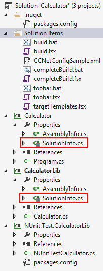

Generating AssemblyInfo files
Note: This documentation is for FAKE.exe after version 5. The documentation for previous version (<=4) can be found here!
In this article the AssemblyInfo task is used in order to set specific version information to .NET assemblies.
If you succeeded with the Getting Started tutorial, then you just have to modify your BuildApp target to the following:
1: 2: 3: 4: 5: 6: 7: 8: 9: 10: 11: 12: 13: 14: 15: 16: 17: 18: 19: 20: 21: 22: 23: 24: 25: |
|
As you can see generating an AssemblyInfo.cs file is pretty easy with FAKE. You can read more about the C# and F# AssemblyInfo tasks in the API docs.
Setting the version no.
The version parameter can be declared as a property or fetched from a build server like TeamCity:
1: 2: 3: 4: |
|

Storing the githash in the AssemblyInfo
Storing the githash with the assembly can make it easier to identify exactly what code is running. There isn't an attribute that directly fits with doing this, but one way is by storing it as Metadata (warning: this attribute is only available in .NET 4.5 and above)
If your solution is inside a git repository you can get the git hash like this (remember to open Fake.Git):
1:
|
|
And set like this:
1:
|
|
One of the easiest ways to retrieve this hash is to load use a reflector program, like ILSpy:

Using the SolutionInfo approach
Some companies split their AssemblyInfo into a SolutionInfo.cs which is shared by all projects and a specific AssemblyInfo per project which contains the product data. All versioning data is generated by the AssemblyInfo task into the SolutionInfo.cs and the AssemblyInfo files are edited manually. This could look like this:

The generated SolutionInfo.cs looks like this: